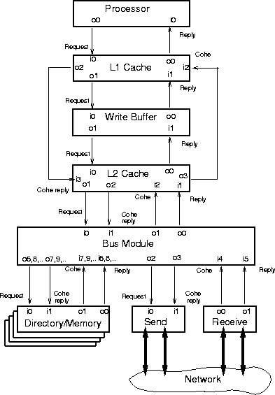

Source files: src/MemSys/architecture.c, src/MemSys/module.c, src/MemSys/route.c
Header files: incl/MemSys/module.h, incl/MemSys/net.h
The SMMODULE data structure contains a basic module framework that is used by many of the modules in the memory system simulator. This framework includes fields common to all the module types, and is initialized using the ModuleInit function. This function sets the node number for the module, along with fields related to the module's input and output ports. These ports, which are of the type SMPORT, are used to connect between the various modules in the memory system simulator. SMPORT data structures act as queues between the various modules and have memory system simulator messages as their entries. (These messages are described in Section 12.2.) Each queue has a fixed maximum size, initialized by the call to ModuleInit (but possibly modified using QueueSizeCorrect later). Note that only output ports are actually created; the input ports of one module are set to the same data structures as the output ports of another module using the ModuleConnect function described in Section 12.3.
Each module also has a routing function, which generates the output port number for each type of message that leaves the module. The various modules and default port connections used in RSIM are shown in Figure 12.1. Input ports are shown on this figure as iX, where X is the port number; similarly, output ports are shown as oX. The terms Request, Reply, Cohe, and Cohe reply correspond to the types of memory system messages, as explained in Section 12.2. If no write-buffer is included, port o1 of the L1 cache connects directly to port i0 of the L2 cache, while port o0 of the L2 cache connects to port i1 of the L1 cache.
RSIM uses a single module for each bank of the directory and memory. The input and output ports connecting the directory and memory to the bus are listed in the form o6,8,... to indicate that each interleaved bank has a separate port in place of the single port shown on the diagram.
The network interface is shown on the diagram as being split into two parts, Send and Receive. Send moves new messages from the node to the multiprocessor interconnection network, while Receive brings messages from the interconnection network into the node. Note that the network system and its connections to the network interface do not use the standard SMMODULE and SMPORT data structures used by the rest of the memory system simulator. The data structures for the network and its connections to the network interface are explained in Section 15.3.

Figure 12.1: Modules and port connections in RSIM
The queue sizes for the various ports are configurable at run-time, as discussed in Chapter 4. The size of the queue specifies the number of transactions of any type (request or response) that can be held in the connection between the modules at any given time. If the size of the queue configured at runtime differs from that originally initialized with ModuleInit, the QueueSizeCorrect function is called to set the sizes of these ports to the desired values. Note that the port queue size also limits the number of requests that can be processed by the module each time the module is activated. For example, if a cache is intended to start processing four requests each cycle, the request port queue should contain at least four entries.
The port queue can also contain more than the minimum number of entries; in these cases, the queue acts as a buffer to decouple a faster module from a slower module. For this reason, the default port sizes from the L2 cache to the bus are larger than most of the other cache ports; these port sizes are chosen so that the potentially slow processing rate of the bus will not cause the L2 cache itself to stall.
The implementation of port queues is such that each port queue holds one of its entries as an ``overflow entry.'' Thus, most of the modules subtract 1 from the port queue sizes specified before calling ModuleInit or QueueSizeCorrect, as this accounts for the separate overflow entry provided. The network interface module does not use the overflow request; these units stop adding to their output ports before allowing the queues to fill up the overflow request.